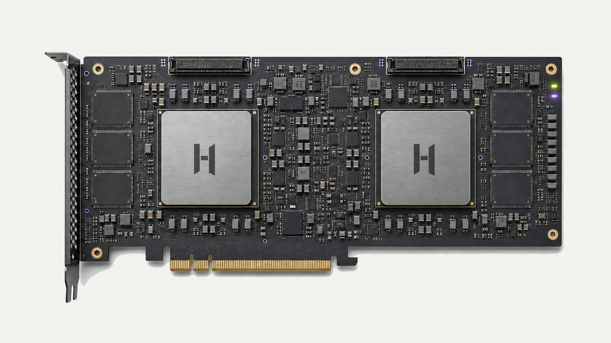

可扩展核心阵列
将工作负载拆分并映射到可组合计算单元。

AI ACCELERATOR
为数据中心训练与推理打造的开放 AI 加速平台。
NOVA ACCELERATOR CARDS


COMPARE NOVA MODELS
| 规划维度 | NOVA N100A | NOVA N200A | NOVA N200P |
|---|---|---|---|
| 产品形态 | 单芯片主动散热卡 | 双芯片主动散热卡 | 双芯片被动散热卡 |
| 相对计算规模 | 1× 基准 | 约 2× N100A | 约 2× N100A |
| 目标显存容量 | 24 GB | 48 GB | 48 GB |
| 主机接口 | PCIe 5.0 ×16 | PCIe 5.0 ×16 | PCIe 5.0 ×16 |
| 卡间互联 | 主机 PCIe | 2× HC-Fabric | 2× HC-Fabric |
| 目标板卡功耗 | 不高于 225 W | 不高于 350 W | 不高于 300 W |
| 散热形态 | 双槽主动散热 | 2.5 槽主动散热 | 双槽被动散热 |
| 目标部署 | 开发工作站、推理服务器 | 高吞吐推理、多卡节点 | 高密度机架服务器 |
规划目标可能随芯片、板级、散热与系统验证结果调整；正式供货型号、兼容性与规格以未来发布的产品资料为准。
设计视角
将工作负载拆分并映射到可组合计算单元。
在片上与板卡级互联之间减少不必要的数据往返。
编译器和运行时理解硬件资源与并行结构。
每一次合作都连接架构、软件、验证与生产运营。
合作路径
FAQ
页面暂不公布未经确认的性能数字；正式规格将在产品定型后发布。
核心定位是 AI 训练与推理，也为自定义算子和高并行计算保留可编程空间。
通过模型覆盖、算子支持、精度、性能和系统接口五个维度进行联合验证。
选择你的阅读视角
技术评估框架
| 设计维度 | 关注问题 | 建议验证方式 |
|---|---|---|
| 核心阵列 | 如何承载矩阵、向量与控制工作 | 用算子与模型混合负载检查调度和利用率 |
| 片上存储 | 工作集能否靠近计算单元 | 分析缓存命中、数据复用和带宽压力 |
| 片上互联 | 数据流能否高效跨核心移动 | 检查拥塞、路由和通信计算重叠 |
| 数值格式 | 精度与效率如何平衡 | 以任务指标对不同精度策略做回归验证 |
| 多卡扩展 | 单卡优化能否扩展到服务器 | 验证集合通信、拓扑和端到端伸缩性 |
| 可服务性 | 设备如何被发现、监控与维护 | 检查遥测、诊断、升级和故障报告机制 |
工作负载地图
分析注意力、专家混合、长上下文与生成阶段。
兼顾图像编码、跨模态融合和生成算子。
关注稀疏特征、批处理、延迟与在线更新。
通过开放接口探索新模型和非标准数据流。
采用与部署路径
用于模型移植、算子开发和性能分析。
围绕并发、延迟、可用性和服务接口配置。
结合网络、调度与模型并行策略扩展。
生产运营关注点
健康检查、故障隔离、恢复与长时间验证。
启动、身份、访问、更新与数据边界规划。
把模型行为与系统状态连接起来的遥测。
版本、兼容、回滚、维护和支持。
资源与状态
本网站提供产品方向、架构原则、工作负载与评估框架。
工作负载定义、环境要求、成功指标和测试计划。
规格、兼容矩阵、SDK、文档、发布说明与模型验证状态将按成熟度开放。
可扩展计算核心与片上互联协同工作，为不同模型结构提供灵活映射空间。
标准化加速卡形态与 HOLYFLOW 工具链，让部署、调优和运维更直接。
准备好开始了吗？